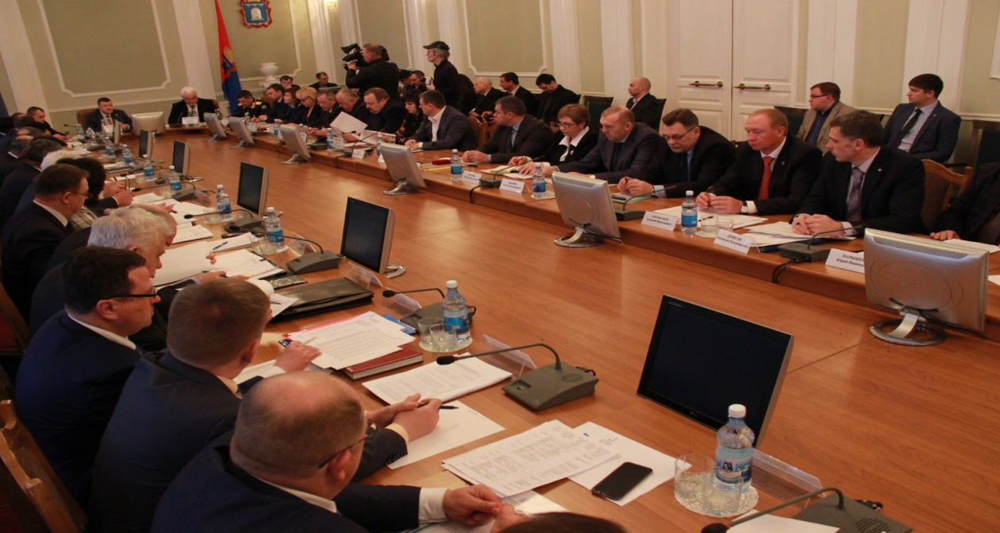

Глава администрации Тамбовской области А.В. Никитин провёл расширенное совещание с главами муниципалитетов
9 марта 2017 года глава администрации области Александр Валерьевич Никитин провел расширенное совещание с главами муниципалитетов. Основными темами совещания стали межбюджетные отношения, исполнение бюджета, налоговая политика, а также поддержка малого и среднего бизнеса.
О поддержке малого и среднего бизнеса рассказал генеральный директор АО МК «Фонд содействия кредитованию малого и среднего предпринимательства Тамбовской области» Андрей Михайлович Блудов, который выступил с докладом на тему: «АО МК «Фонд содействия кредитованию малого и среднего предпринимательства Тамбовской области»: новые возможности для реализации бизнеса».
А.М. Блудов довел информацию присутствующим о намерении заключить соглашения о взаимодействии АО МК «Фонд содействия кредитованию малого и среднего предпринимательства Тамбовской области» и муниципальными образованиями. Указанное соглашение предусматривает план-график реализации мероприятий («дорожной карты») по развитию малого и среднего предпринимательства на 2017 год.
Говоря о поддержке малого и среднего бизнеса, А.В. Никитин подчеркнул, что знать о тех или иных мерах должны не только предприниматели, но и главы муниципалитетов.
Совещание с главами муниципальных образований Тамбовской области по озвученным вопросам проводилось впервые. Задача этого совещания – не обсуждать успехи, а реально оценить проблемные моменты. В завершении встречи А.В. Никитин призвал коллег к слаженной коллективной работе.
